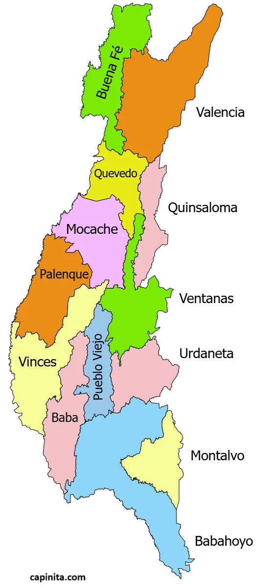
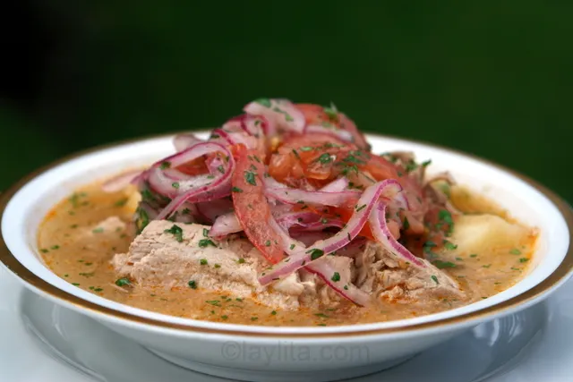
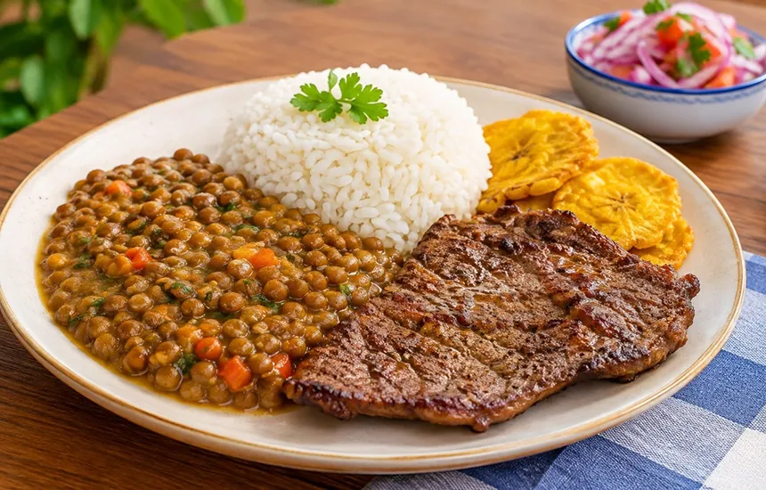
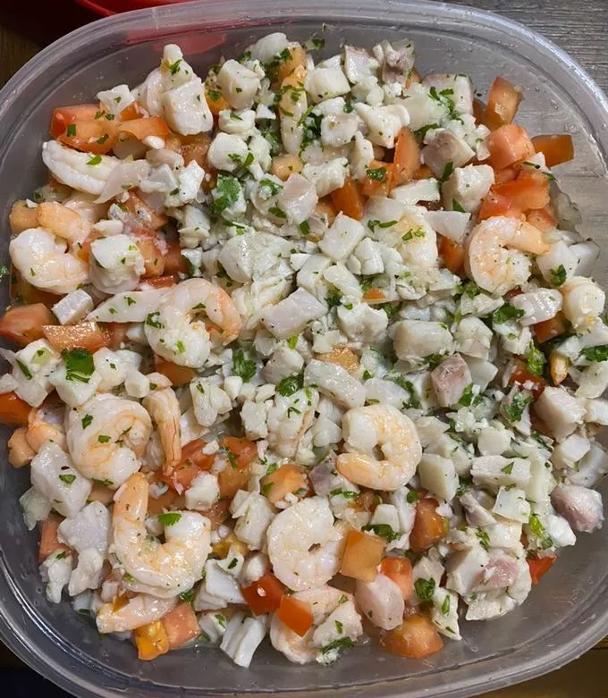
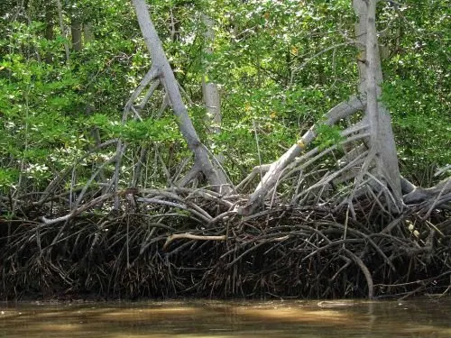
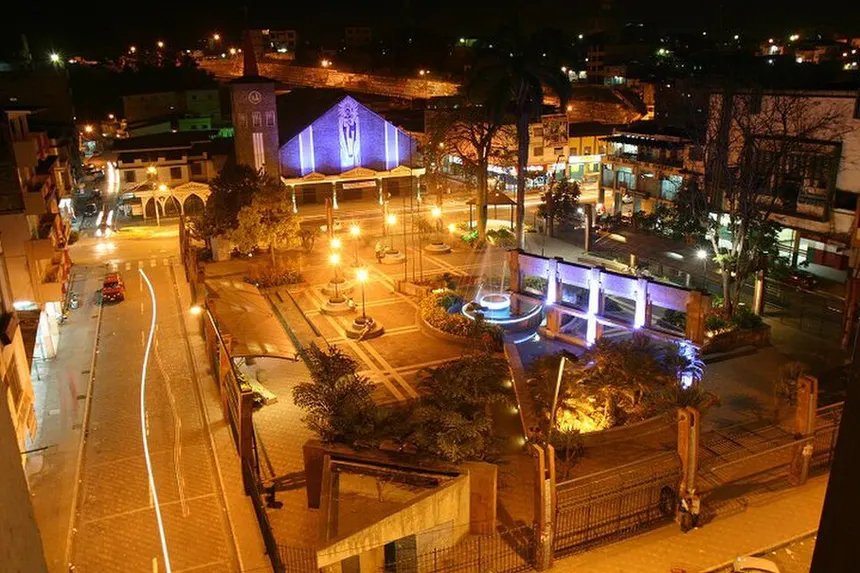
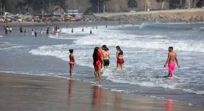
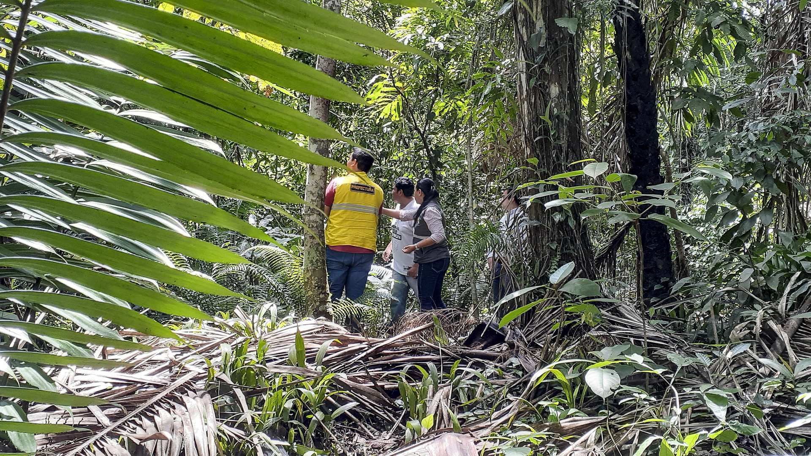
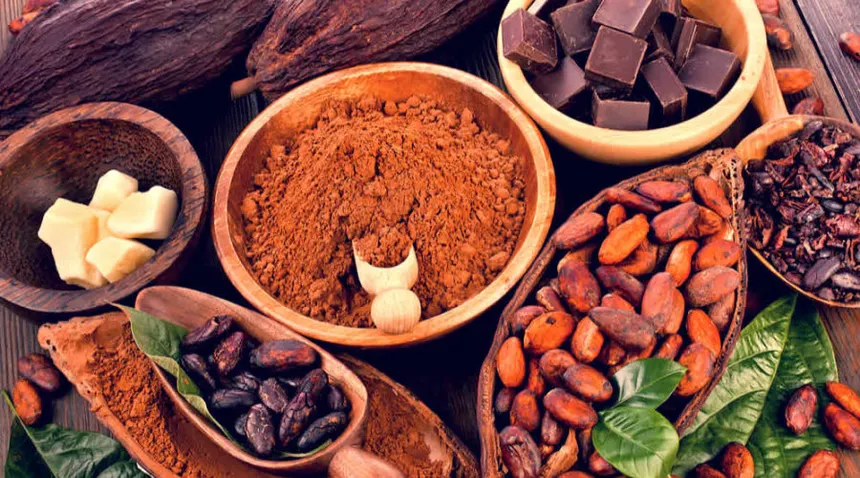
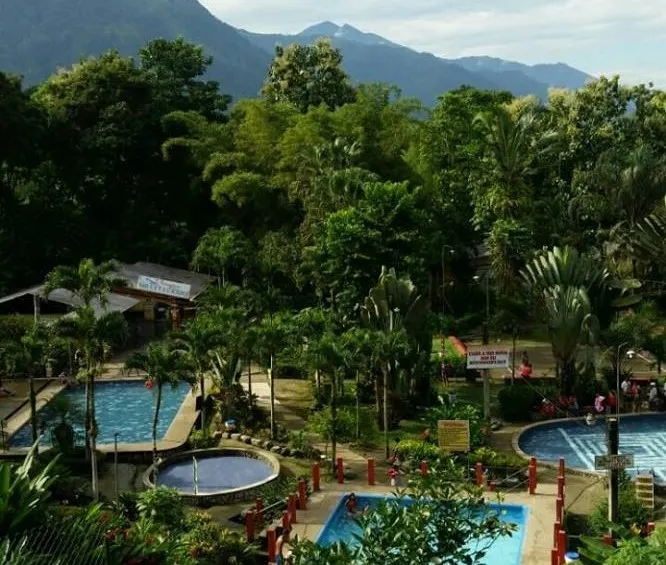

Bienvenido a la Provincia de Los Ríos
La provincia fue creada oficialmente el 6 de octubre de 1860 por decreto del presidente Gabriel García Moreno. Se ubica en el centro de la región litoral del Ecuador. Su capital es Babahoyo y su ciudad más poblada es Quevedo. Rodeada por una extensa red fluvial de ríos caudalosos como el Babahoyo y el Vinces, Los Ríos es famosa por sus fértiles tierras donde florece el cultivo de cacao de aroma, banano, café, arroz y maíz. Su gente conserva con orgullo las costumbres montuvias, el rodeo y una profunda calidez que acoge a todo visitante.
Históricamente, sus ríos funcionaron como las principales autopistas de comercio entre la Sierra y el Puerto de Guayaquil durante la época colonial y republicana. Las embarcaciones surcaban los caudales transportando la producción hacia los mercados internacionales.
La Pepa de Oro
Los Ríos fue escenario clave del auge cacaotero mundial a finales del siglo XIX y principios del XX, conocido popularmente como la época de "La Pepa de Oro". Este boom económico moldeó la arquitectura, la economía y la identidad cultural de toda la región.
Hoy en día, la provincia conserva con orgullo sus tradiciones montuvias, combinando su rica herencia agrícola con el dinamismo de sus 13 cantones.
Símbolos Provinciales
Escudo: Representa la riqueza fluvial, la abundancia agrícola, las herramientas de labranza y el espíritu constante de trabajo de sus habitantes.

La Bandera: Compuesta por tres franjas horizontales iguales. Las dos exteriores son de color verde (que representa la feracidad de sus campos y la agricultura) y la central de color blanco (que simboliza la paz y la pureza de sus ideales).
Los 13 Cantones de la Provincia de Los Ríos
La provincia de Los Ríos está compuesta por 13 cantones, cada uno con su propia identidad y encanto. Desde la capital Babahoyo hasta Quevedo, cada cantón ofrece una experiencia única que refleja la diversidad cultural y natural de la región.
Lista de Cantones:
- Babahoyo: la capital de la provincia, conocida por sus casas flotantes y su ambiente tropical.
- Quevedo: La "Capital Agroindustrial del Ecuador", famosa por su actividad económica y diversidad gastronómica.
- Vinces: Apodada "París Chiquito", reconocida por su influencia francesa y sus atractivos turísticos.
- Mocache: Conocida por su hermoso entorno natural y su población indígena.
- Puebloviejo: Atracción turística por su arquitectura colonial y su ambiente tranquilo.
- Palestina: Destacada por sus paisajes rurales y su vida comunitaria.
- Valencia: Conocida por su economía agrícola y su patrimonio histórico.
- Urdaneta: Importante centro comercial y de servicios en la región.
- Buena Fe: Conocida por su belleza natural y su ambiente rural.
- Ventanas: Atracción turística por su paisaje montuvio y su biodiversidad.
- Quinsaloma: Destacada por su patrimonio cultural y sus festividades tradicionales.
- Palenque: Conocida por su historia indígena y sus atractivos naturales.
- Montalvo: Atracción turística por su entorno rural y sus actividades agropecuarias.

Cada cantón tiene su propia historia, tradiciones y atractivos turísticos que hacen de Los Ríos un destino fascinante para explorar.
Gobierno Provincial y Autoridades
La provincia de Los Ríos cuenta con un gobierno provincial encabezado por el Prefecto, quien es elegido por voto popular. El Prefecto es responsable de la administración y desarrollo de la provincia, supervisando proyectos de infraestructura, educación, salud y cultura.
Autoridades Provinciales:
- Prefecto: Johnny Terán
- Viceprefecto:Mayra Díaz Sandoya
- Asambleístas Provinciales: ,
- Eduardo Mendoza Palma.
- Rosa Alegría Torres.
- Johnny Terán Barragán.
- Humberto Alvarado Espinel.
- Mónica Salazar Hidalgo.
- Ronal González Valero.
- Alcaldes de los Cantones:
- Babahoyo | Gustavo Alfredo Barque Marún
- Baba | Shirley Jael Melo Olvera
- Buena Fe | Diana Catalina Anchundia Yépez
- Mocache | Yenny Viviana Domínguez Santos
- Montalvo | Víctor Eduardo Troncoso Rosas
- Palenque | Jordy Jair Carriel Navarrete
- Puebloviejo | Elsy Jodamia Ospina Garcés
- Quevedo | Alexis Fernando Matute Matute
- Quinsaloma | Christian Danilo Aldaz González
- Urdaneta | Amada Argentina Zambrano Rodríguez
- Valencia | Daniel Vicente Macías López
- Ventanas | Carlos Agapito Carriel Abad
- Vinces | Juan Alfonso Montalván Cerezo
Estas autoridades trabajan en conjunto para promover el desarrollo sostenible de la provincia, fomentando la participación ciudadana y la transparencia en la gestión pública.
Gastronomía y Cultura Montuvia
La gastronomía de Los Ríos es un reflejo de su rica herencia cultural y su entorno natural. Platos típicos como el encebollado, el seco de chivo, la fritada y el bolón de verde son parte esencial de la identidad culinaria de la región. Además, la provincia es conocida por sus festividades montuvias, que incluyen danzas tradicionales, música y celebraciones que fortalecen el sentido de comunidad.
Platos Típicos:
- Encebollado: Sopa de pescado con yuca y cebolla encurtida.
- Seco de Chivo: Guiso de carne de cabra con especias y vegetales.
- Fritada: Carne de cerdo frita acompañada de maíz y plátano.
- Bolón de Verde: Bolas de plátano verde rellenas de queso o chicharrón.
- Viche: Sopa espesa de pescado, plátano y maní, típica de la región montuvia.
- Arroz con Menestra y Carne Asada: Plato principal compuesto por arroz, una mezcla de legumbres y carne asada.
- Ceviche de Pescado y Camarón de Río: Preparado con cítricos locales y acompañado de chifles o tostado.





La gastronomía y las tradiciones montuvias son un atractivo para los visitantes que desean experimentar la auténtica cultura ecuatoriana en Los Ríos.
Turismo y Naturaleza
Los Ríos ofrece una variedad de atractivos turísticos que van desde sus ríos caudalosos y paisajes naturales hasta su arquitectura colonial y festividades culturales. Los visitantes pueden disfrutar de actividades al aire libre, como paseos en bote, pesca deportiva, senderismo y exploración de reservas naturales.
Atractivos Turísticos:
- Río Babahoyo: Ideal para paseos en bote y pesca.
- Reserva Ecológica Manglares Churute: Un paraíso para los amantes de la naturaleza y la observación de aves.
- Parque Central de Quevedo: Un lugar histórico con monumentos y áreas recreativas.
- La Casa de Olmedo, Babahoyo: Hacienda donde el poeta y político José Joaquín de Olmedo escribió sus obras y se firmó el Tratado de la Virginia.
- Playas de Agua Dulce de Vinces y San Camilo, Quevedo: En temporada seca, los ríos bajan su nivel dejando amplias playas de arena muy concurridas por bañistas.
- Reserva Biológica Jauneche, Palenque: Uno de los últimos remanentes de bosque tropical primario de la Costa, ideal para el avistamiento de aves y senderismo.
- Haciendas Cacaoteras Ruta del Cacao: Recorridos turísticos por plantaciones donde se aprende el proceso artesanal e industrial del chocolate ecuatoriano.
- Balnearios de Montalvo y Quinsaloma: Riberas de ríos de agua fresca que bajan de los Andes, perfectos para el turismo familiar de fin de semana.








La provincia de Los Ríos es un destino ideal para quienes buscan combinar cultura, historia y naturaleza en un solo lugar.
Alojamiento y Guía de Viaje
¿Dónde Hospedarse? Babahoyo y Quevedo cuentan con hoteles ejecutivos, suites y hostales modernos. Para una experiencia rural, existen fincas agroturísticas en Vinces, Mocache y Montalvo.
Cómo Llegar: La provincia cuenta con una amplia red de carreteras conectada con Guayaquil (a 1.5 horas de Babahoyo) y Santo Domingo/Quito por la vía a Quevedo.